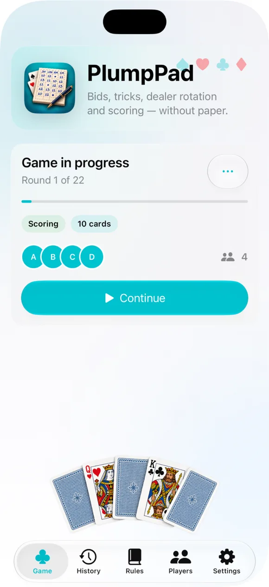
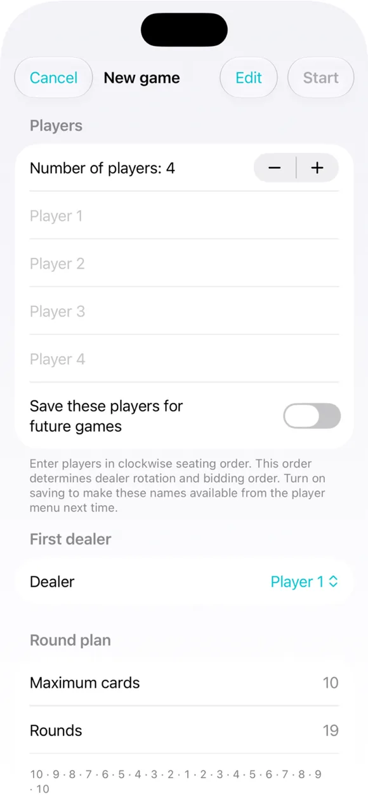
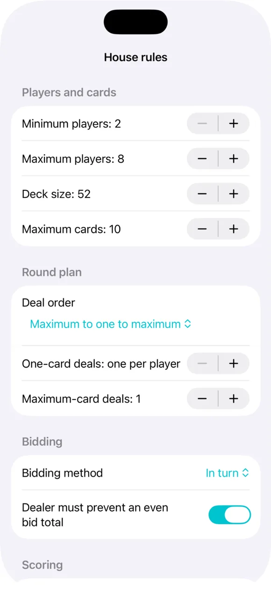
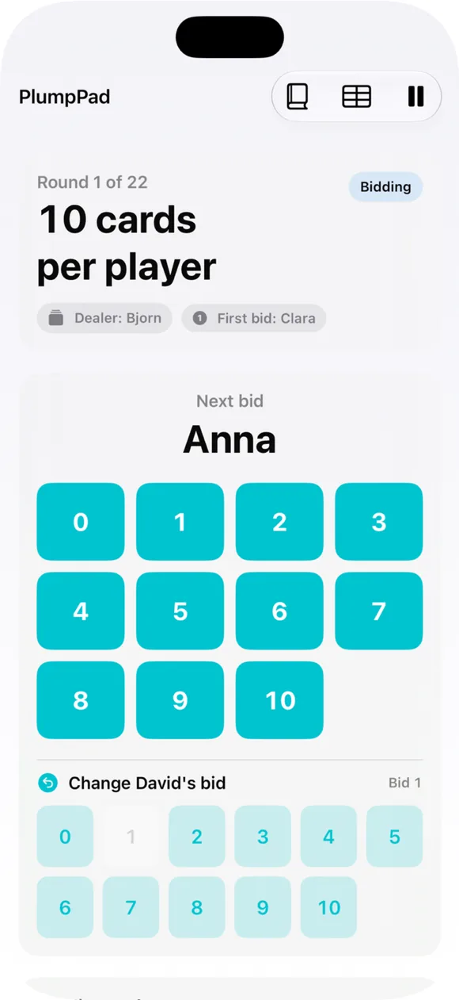
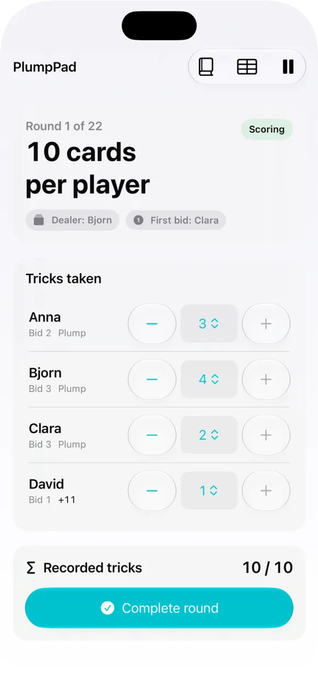
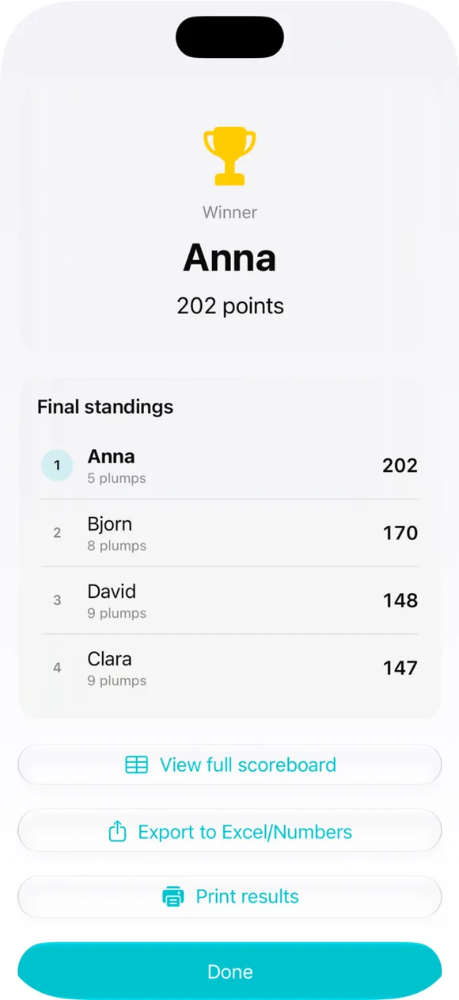
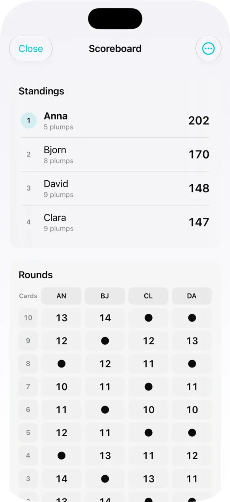
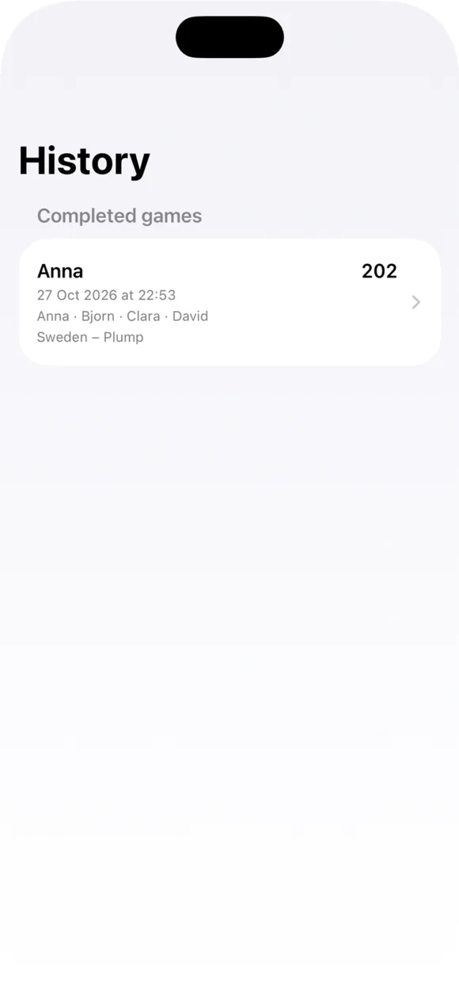

1
Doze variantes
Perfis para Plump, Oh Hell, Piratbridge e outros jogos de vazas.
O PlumpPad regista apostas, vazas e pontos com doze variantes de regras e regras da casa personalizáveis. Joga-se com cartas reais.
Escolha as regras, introduza as apostas e deixe o PlumpPad calcular os pontos.
Perfis para Plump, Oh Hell, Piratbridge e outros jogos de vazas.
Ajuste baralho, jogadores, distribuição, apostas e pontuação; guarde as regras.
Mostra quem dá cartas e quem aposta a seguir. Bloqueia a última aposta proibida quando aplicável.
Introduza as vazas num menu ou com botões mais/menos. Os pontos seguem o perfil escolhido.
Os jogos em curso ficam guardados localmente para continuar mais tarde.
Guarde nomes e escolha se quer manter os jogos concluídos.
Imprima PDF em A4/Letter, partilhe CSV e ajuste as opções do ecrã.
Comece por um perfil e adapte-o antes de jogar. O conjunto escolhido determina os pontos, mas não controla as cartas jogadas fisicamente.
Capturas de ecrã atuais da versão analisada, apresentadas em inglês.







